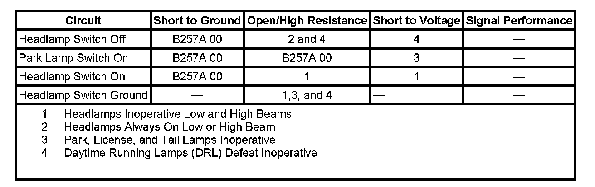
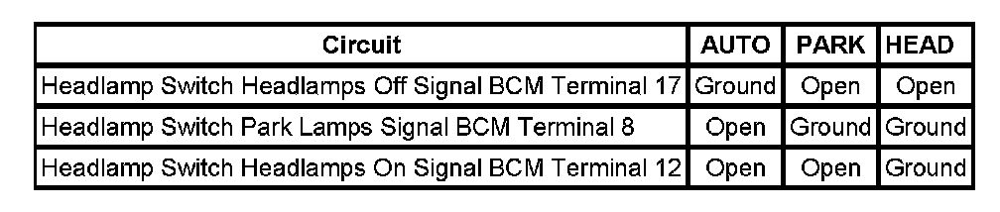

B257A
DTC B257A
DTC DESCRIPTOR
DTC B257A 00
Headlamp Switch Input Signal Mismatch
DIAGNOSTIC FAULT INFORMATION

Perform the Diagnostic System Check - Vehicle prior to using this diagnostic procedure. Initial Inspection and Diagnostic Overview
CIRCUIT/SYSTEM DESCRIPTION
When the headlamp switch is in the AUTO position, the body control module (BCM) receives a ground signal through the headlamp switch headlamps OFF signal circuit and no signal on the headlamp switch headlamp ON signal circuit and headlamp switch park lamps ON signal circuit. When the headlamp switch is in the PARK or HEAD position, the BCM receives no signal through the headlamp switch headlamps OFF signal circuit and a ground signal through the headlamp switch headlamp ON signal circuit and headlamp switch park lamps ON signal circuit.
CONDITIONS FOR RUNNING THE DTC
The ignition is ON.
CONDITIONS FOR SETTING THE DTC
The BCM receives a mismatched signal between the headlamp switch headlamps OFF signal circuit, the headlamps switch headlamps ON signal circuit, and the headlamp switch parklamps signal circuit.
ACTION TAKEN WHEN THE DTC SETS
The BCM disregards the headlamp switch input and defaults to automatic headlamp function.
CONDITIONS FOR CLEARING THE DTC
- The conditions for setting the DTC are no longer present.
- A history DTC clears after 100 malfunction-free ignition cycles.
- The BCM receives the clear code command from the scan tool.
CIRCUIT/SYSTEM VERIFICATION
Ignition ON, headlamp switch to PARK, just the park lamps should illuminate. Headlamp switch to HEAD, the park lamps and headlamps should illuminate.
CIRCUIT/SYSTEM TESTING

1. Ignition OFF, disconnect the BCM connector C2 and start with the headlamp switch in the AUTO position. Use the chart above to determine when and where a ground signal should be present. Test each connector circuit listed in the chart for the proper signal.
2. If voltage is present on any circuit, test that circuit for a short to voltage.
- If the circuit/connections test normal, replace the headlamp and panel dimmer switch.
3. If no ground signals are present, test the headlamp switch ground circuit for an open.
- If the circuit/connections test normal, replace the headlamp and panel dimmer switch.
4. If all signal functions of the headlamp and panel dimmer switch circuits test normal, replace the BCM.
REPAIR INSTRUCTIONS
Perform the Diagnostic Repair Verification after completing the diagnostic procedure.
- Headlamp Switch Replacement
- Control Module References for BCM replacement, setup, and programming. Verification Tests Programming and Relearning